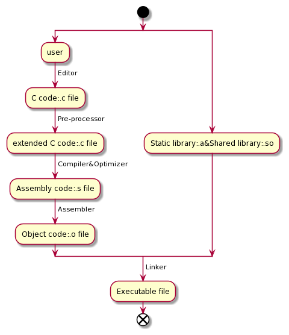

Shaofeng's Personal Website
GCC（GNU Compiler Collection，GNU编译器套件）是由GNU开发的编程语言译器。GNU编译器套件包括C、C++、 Objective-C、 Fortran、Java、Ada和Go语言前端，也包括了这些语言的库（如libstdc++，libgcj等。）

Following is a list of frequently used gcc options and how to use them.
gcc test.c gcc -o test.exe test.cgcc -E test.c -o test.igcc -S test.igcc -c test.sgcc test.o -o test.exegcc-O1 test.c -o test.exegcc test1.c test2.c -o test.exegcc -c test1.c
gcc -c test2.c
gcc test1.o test2.o -o test.exe